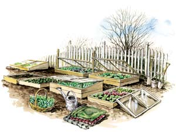
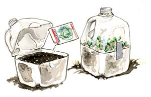

Gardening guru Eliot Coleman asserts that “the basic cold frame is the most dependable, least exploited aid for the four-season harvest.” We couldn’t agree more. Last winter, my humble box built of 2-by-4s topped with an old shower door added a month to the front end of salad season, but the best part was being able to sow some of my spring seeds directly into the frame. This made more space available under lights indoors for tomatoes and other crops that don’t like chilly conditions, and eliminated the hassle and setbacks involved with hardening off seedlings and then transplanting them. Best of all, seedlings get a nice head start in real sun so they never get stretched out and leggy as they often do when started indoors. (Indoor grow lights are vastly less intense than real sunlight.)
What can you sow in a cold frame? In spring you get a boost with virtually any crop by sowing into frames. The list of “Top 12 Winter Cold Frame Crops” (below) can get you started, and as days get longer and warmer in spring you can try your hand at framing up peas, bulb onions, potatoes or even tomatoes. When a cold frame is no longer needed for a crop that is up and growing, simply move it to a new location and plant more seeds.
Traditionally, gardeners have used cold frames to harden off seedlings started indoors, and you should have a frame suited to this purpose. But one cold frame is not enough. In addition to direct seeding some vegetables right where they are to grow, you can use a cold frame to winter-sow onions, cabbage or other hardy crops that are easily lifted and transplanted into rows.
A cold frame can be a wood box with a recycled window (or shower door) top, a hay bale enclosure covered with plastic, or you might build one with bricks or concrete blocks and top it with translucent corrugated fiberglass (see “Anatomy of a Cold Frame,” below). Your frames need not be all alike, though having two of the same size makes it possible to stack them for added height. I like frames I can move around by myself without straining, so size and weight are important considerations. If you live north of Zone 6, you may want to create frames that are large enough to accommodate black, water-filled containers for solar heat storage, and insulate the sides by adding a snug berm of soil or mulch. In climates with chronic winter cloud cover, you can maximize available light by painting the interior walls of your frames bright white, or by covering them with heavy-duty aluminum foil.
Cold frames shelter plants from ice, snow and treacherous winter winds, and heat up the soil whenever the sun shines. The soil inside a frame will warm up much faster than open ground, and because seeds of many hardy vegetables can germinate in the 50 degree range, a three-day spell of mild weather often coaxes them to life. Weed seeds will germinate alongside the seeds you plant, but you will see far fewer weeds if you cover the soil’s surface with a 1-inch-deep blanket of potting soil (purchased or homemade). Be prepared to add water as needed to keep the soil from drying out.
After seeds have begun to grow inside the frames, the plants are surprisingly cold tolerant. I have watched lettuce seedlings sail through 10-degree nights when the frame was covered with a thick polyester-filled blanket, and framed-up spinach never sulks no matter how cold it gets. Yet these and other winter-sown vegetables will complain if a frame is allowed to overheat, so it’s crucial that frames be opened to vent out excess heat. When in doubt, it is always better to vent than to risk frying your plants. If you can’t be around to open and close your frame and a warm sunny day is in the forecast, covering the top of a closed frame with a light-blocking blanket for a few days is your safest strategy. If blustery winds threaten to sabotage your venting plan, place a board over the box, between the frame and the top, to keep it from slamming shut. Or use hooks and eyes to fasten the open top to posts sunk into the ground alongside the frame.
Any cold frame will harness solar energy for your plants’ benefit, and there are several low-tech ways to help your frames retain solar warmth. Black antifreeze containers, milk or kitty litter jugs painted flat black can be filled with water and tucked into the corners. Or you can cover the spaces between plants with flat stones painted black or “solar pillows” - used freezer bags painted black and filled with water. If you want to get more sophisticated, check into the Solar Pods and Solar Cones developed by New Hampshire gardeners Leandre and Gretchen Poisson. Described in detail in their book, Solar Gardening, and in Mother’s online Archive, the Poissons’ devices are probably the best you can build, if you can afford the materials. The superior performance of these garden appliances comes from the use of Sun-Lite flexible fiberglass, which costs about $80 for a 4-by-8-foot piece.
Historically, gardeners have used the warmth generated by rotting manure to turn cold frames into hot beds. To make a hot bed, dig a hole inside your frame at least 12 inches deep and fill it with fresh horse manure mixed with straw, and topped with 6 inches of soil. As the manure decomposes, it releases heat into the frame.
But you don’t have to have fresh manure to build a hot bed - or at least a warm one. For example, let’s say you want to winter-sow broccoli, spinach or another crop that needs abundant nutrients. If you dig out a bed and refill it halfway with compost mixed with the cheapest dry dog food you can find (a sure-fire compost activator), and then top it with 6 inches of soil, the compost will generate enough heat to keep the little plants from freezing and thawing quickly - if they freeze at all. In spring, when the plants’ roots find the buried treasure deepin the bed, you may be looking at the biggest, best plants you have ever grown.
Another option is to use the warmth generated by rotting hay to heat your cold frame from the sides. If you have plenty of space available and you plan to mulch with hay or straw this season anyway, go ahead and get four bales and arrange them in a semicircle on ready-to-plant ground, with the open side facing south. Plant the middle, and then top the bales with a wide sheet of plastic stapled to two 2-by-4s; one board will lie atop the back bales, and the other will anchor the plastic to the ground in front. You can make a bigger hay bale haven by arranging seven or eight bales in a square, and topping the enclosure with an old window, glass door or piece of sheet vinyl or corrugated fiberglass. Or, make your bales go twice as far by breaking them in half and encircling your planting with half bales, set side by side with their cut sides out. Allow the broken bales to get nice and damp before you plant, and then cover the bed and bales with a large piece of plastic sheeting. As the wet hay decomposes, much of the heat it releases will stay inside the bed.
To prepare a hot bed, warm bed or solar-charged cold frame when the soil is frozen, simply place a closed frame over the spot for several days. Daytime heating will thaw the soil inside, an inch or two at a time.
Various types of cold frames are multiplying like rabbits in my garden. With the help of the frames, spring now comes to my garden at least six weeks ahead of schedule.
These 12 vegetables are easy to grow when sown in cold frames in late winter.
This simple technique was developed for seeds that need to spend a winter outside before they will germinate, but it’s also a great method to start garden seeds in late winter if you don’t have indoor lights or a cold frame.
Site Surface: Frames work best if the top is angled slightly toward the winter sun. You can either cut slanted sides (see illustration, Image Gallery) or, as an alternative, mound soil as needed to make the back edge of the frame sit slightly higher than the front.
Frame: Scrap wood or untreated 2-by-4 or 2-by-6 pine boards are fine, or you can upgrade to rot-resistant cedar, redwood or locust or composite plastic lumber. Other options include logs, baled hay or straw, bricks or concrete blocks.
Corners: If you only have a hand saw, a hammer and a screwdriver, you can build a sturdy box from 2-by-4s, a few screws and four steel corner brackets. Brackets come in different forms - some for inside the box and some for outside. The simplest (and cheapest) ones screw into the top of a frame that’s already been banged together with 3-inch box nails.
Covers: The best materials for topping cold frames are tempered glass patio doors or shower doors, which often are discarded when homes and apartments are remodeled. Heavy enough to resist strong winds, shatter-resistant tempered glass doors are better scavenger hunt treasures than standard storm windows or paned windows, which can be a safety hazard. Look in thrift stores (Habitat for Humanity often sells donated doors), or call people in home remodeling or salvage businesses. Look for doors that still have plenty of hardware attached, and leave the hardware intact as you scrub down your prize. Later, after you’ve built a frame, the existing hardware may prove handy as part of a nifty hinge or a ready-made handle. Tempered glass doors come in all sorts of weird sizes, so it’s best to secure a top first, and then tailor the frame to match its dimensions.
Use thick blankets, quilts or bedspreads to bring winter-sown frames through winter storms, or to block sun when you can’t be around to vent the frames. Snow makes a good insulating cover, too.
|
 ELAYNE SEARS Get a jump start on your spring garden by using cold frames to sprout seeds in a warm, protected enclosure and protect tender seedlings from wind and frost. |
 ELAYNE SEARS You can make a mini cold frame by planting seeds in a milk jug filled with rich planting soil. |
|